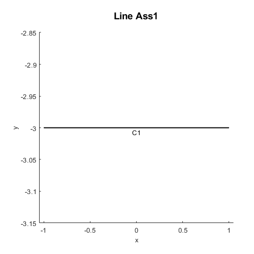
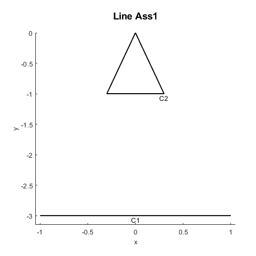
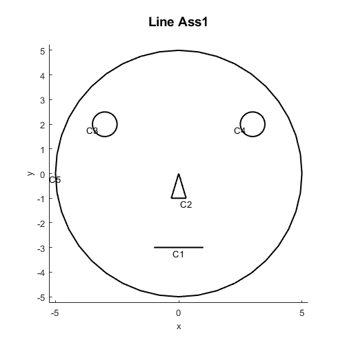
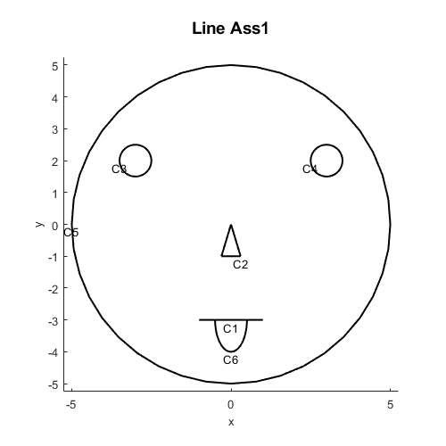
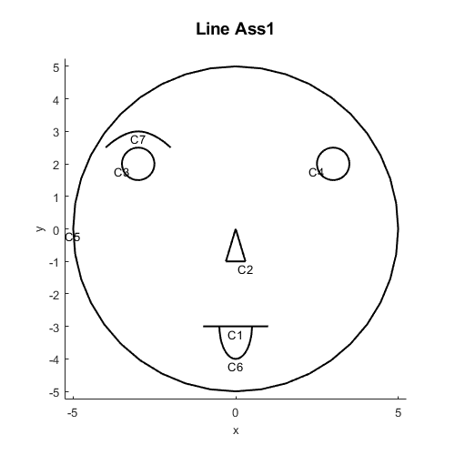
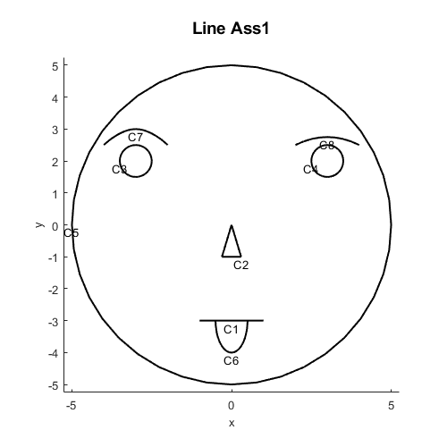
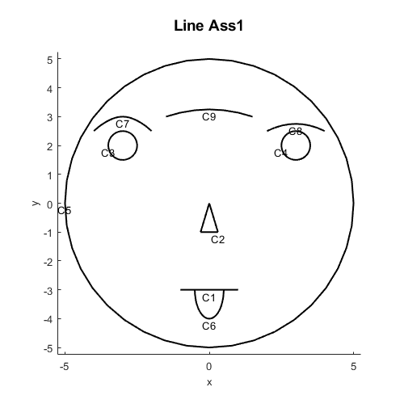
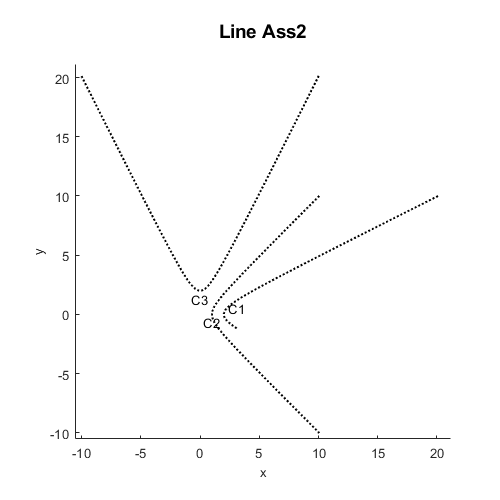
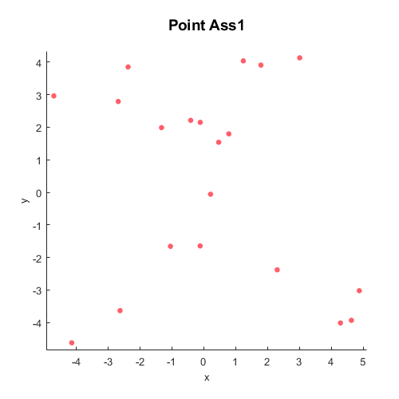
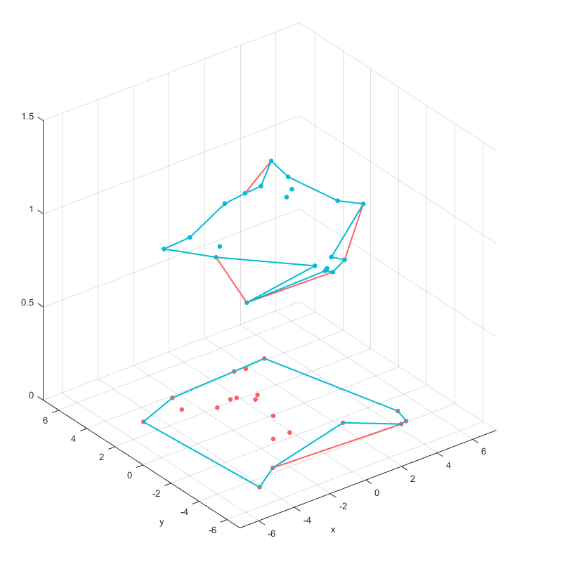

Introduction
Line2D is an object responsible for importing and creating 2D lines.
Examples
AddLine
AddLine
Add straight line, the straight line only have two points: start point and end point.
x1=[-1;1]; |

AddCurve
x2=[0;0.3;-0.3;0]; |

AddCircle
Add circle to Line2D, you can also use 'sang' and 'ang' to define the degree of the curve.
x3=-3;y3=2; |

AddEllipse
Add elliptic arc
x6=0;y6=-3; |

AddSpline
Add cubic spline curve.
x7=[-4;-3;-2];y7=[2.5;3;2.5]; |

AddBezier
Add Bezier curve.
x8=[4;3;2];y8=[2.5;3;2.5]; |

AddBspline
Add B-spline curve
x9=[-1.5;0;1.5];y9=[3;3.5;3]; |

AddHyperbola
Add hyperbola curve.
b1=Line2D('Line Ass2'); |
AddParabola
Add parabola curve.
b2=Line2D('Line Ass3'); |

Calculate the boundary of several points
Generate random points
x1=-5 + (5+5)*rand(20,1); |

Calculate the points boundary
'Scale' is a shrink factor. Default value is 0.5. When the factor is 1, the result create a more compact boundary enveloping the points.
b=Line2D('Line Ass1','Compress',0); |

|

|
L=Layer('Layer 1'); |
We can easily see the different at space.

Draw arrows
You can add arrow head with different types.

|

|

|
| 'Arrow'=1 | 'Arrow'=2 | 'Arrow'=3 |
Cheat Sheet
| Name | Description | Options |
|---|---|---|
| Line2D('Name') | Create Line2D object | 'Echo', 'Gtol', 'Dtol', 'Atol', 'Rtol', 'Adfac', 'Compress', 'Arrow', 'Form' |
| AddLine(obj,Point2D,P) | Add line to Line2D | |
| AddCurve(obj,Point2D,P) | Add curve to Line2D | |
| AddBezier( obj, Point2D, P ) | Add Bezier curve to Line2D | |
| AddBspline( obj, c, Point2D, P ) | Add B-spline curve to Line2D | |
| AddCircle(obj,r,Point2D,P,varargin) | Add circle curve to Line2D | 'sang', 'ang', 'seg' |
| AddEllipse( obj, a, b,Point2D,P, varargin) | Add ellipse curve to Line2D | 'sang', 'ang', 'seg', 'rot' |
| AddHyperbola( obj, a, b,Point2D,P, varargin ) | Add hyperbola to Line2D | 'rot', 't1', 't2' |
| AddParabola( obj,f,Point2D,P,varargin ) | Add parabola to Line2D | 'rot', 't1', 't2' |
| Boundary(obj,Point2D,varargin) | Calculate the boundary of points | 'scale', 'group' |
| GetCurve(obj,id) | Get curve data | |
| GetNcrv(obj) | Get the number of curve | |
| Plot | Plot lines | 'grid', 'name', 'axe', 'clabel', 'styles', 'equal', 'curve', 'map', 'color' |
Reference
[1] https://www.mathworks.com/matlabcentral/fileexchange/71745-draw19
[2] https://www.mathworks.com/matlabcentral/fileexchange/72573-fem19?s_tid=srchtitle